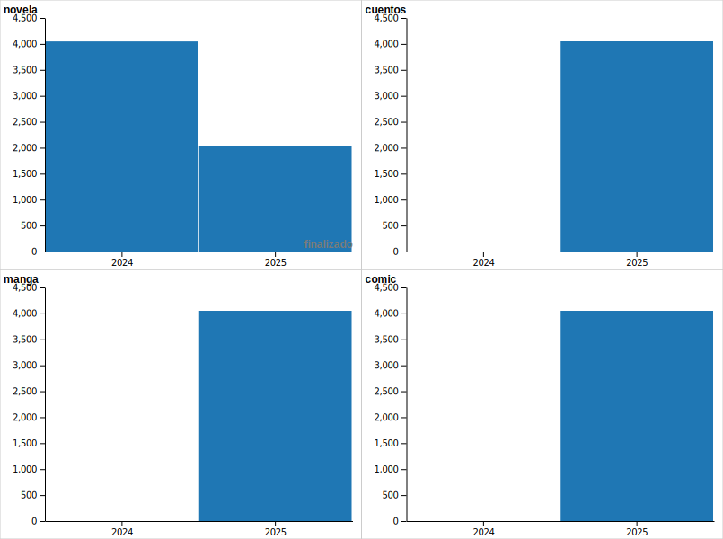

Trabajo Práctico — Prototipo
Lecturas personales: volumen, tipos y ritmos
¿Existe relación entre páginas y capítulos?
novela
manga
cuentos
comic
El señor de los anillos
Palabras radiantes
Crimen y castigo
Solanin
Dededede #1
La llamada de Cthulhu y otros cuentos
El aleph
Watchmen
Batman: Año Uno
113.9
455.5
paginas [sum]
comic
cuentos
manga
novela
tipo [csvDistinct]
Cada punto es un libro; tamaño/posición por páginas y capítulos.
¿Cuántos libros terminé cada año?

Distribución anual de libros finalizados, desglosado por tipo.